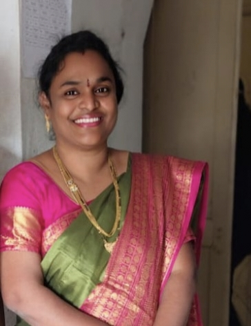

CONSERVATION
Protect forests, water, biodiversity and the natural resources on which life depends.
TEACHERS' DAY • SPECIAL TRIBUTE
A digital expression of gratitude for the teacher who reminds us that protecting our environment is protecting our future.
01 • OUR FACULTY
Subject: Environmental Education
Environmental Education teaches us to understand the relationship between people and nature, recognize environmental challenges and make responsible choices for a sustainable future.
02 • ENVIRONMENTAL COMPASS
Protect forests, water, biodiversity and the natural resources on which life depends.
Use resources wisely so that present needs do not compromise the needs of future generations.
Understand environmental problems and the human actions that contribute to them.
Turn knowledge into responsible habits, community participation and practical solutions.
03 • ONE PLANET
Environmental education does not end with a lesson. It begins when knowledge becomes a habit.
04 • GRATITUDE
On this Teachers' Day, we sincerely thank you for teaching us the importance of Environmental Education.
Your subject helps us understand that the environment is not something separate from our lives. Clean air, safe water, forests, biodiversity and responsible resource use are all connected to our future.
The awareness we gain through environmental education can shape the choices we make as students, citizens and future professionals.
Thank you for helping us understand that caring for the planet is not only a responsibility — it is a way of respecting life.05 • FINAL TRIBUTE
FACULTY • ENVIRONMENTAL EDUCATION
The greatest environmental lesson is one that continues through the choices we make every day.
OUR RESPECTED FACULTY

With deepest respect, gratitude and best wishes. 🌱